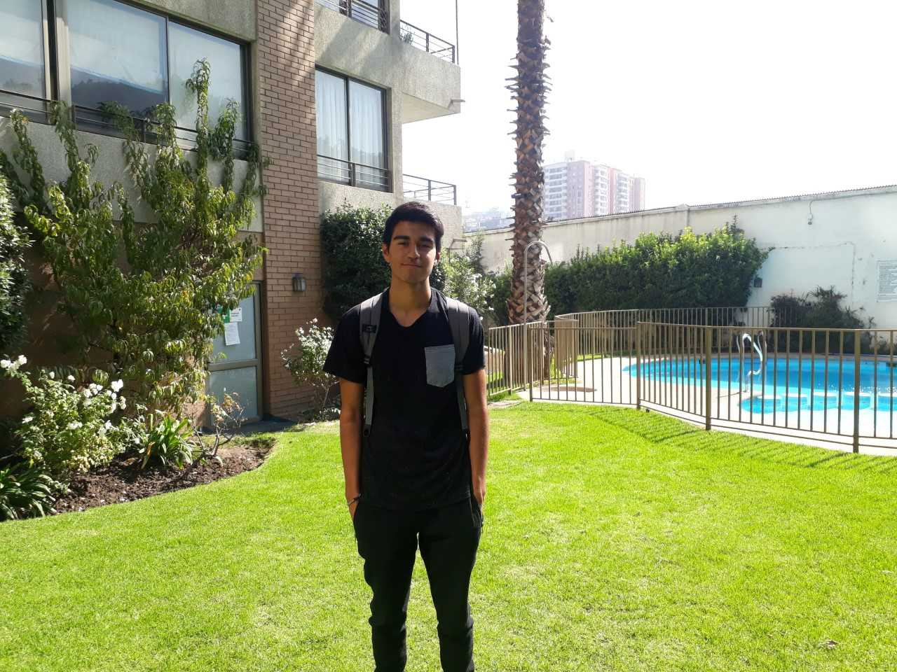

NOTICIAS

Agradecimiento por departamento de acogida
Señores fundación Niño y Cáncer: Junto con saludar y esperando que se encuentren bien, mi nombre es Yerka Molina y mi motivo de este mensaje es poder agradecer todo lo que me brindaron en apoyo por mi hija Dailyn Flores. Entregándome una estadía por 4 años en el departamento 2003 de Torre Dominica, sin ningún problema y comprendiendo siempre nuestra difícil situación, quisiera por otro lado, desearle los mejores de los éxitos como fundación, a seguir ayudando y apoyando a cada niño y familia que lo necesite y nunca les falte nada, gracias totales.
Agradecimiento por departamento de acogida
Por medio de la presente queremos saludarles. Nuestro hijo Javier Opazo,fue diagnosticado el 23 de diciembre del 2011, con leucemia Promeolicitica llegando a clínica Davila para su tratamiento con el doctor Juan Quintana, donde gracias a Dios tuvimos la bendición de hacer contacto con su fundación en un momento tan difícil para nosotros como familia. Fue un apoyo grande por que no contábamos con los medios para hospedarnos en algún lugar. Familia Opazo Opazo.
Last updated 3 mins ago

“XVI TORNEO INTER HOSPITALES DE FUTBOLITO Y PORRISTAS 2019"
FUNDACIÓN NIÑO Y CÁNCER INFORMACION GENERAL El Domingo 14 de abril 2019 se llevó a cabo el XVI Torneo de Futbolito y Porristas de la Fundación Niño y Cáncer en el Estadio del Banco Central ubicado en la Reina. Asistieron 500 personas aproximadamente. La actividad fue calificada como una de las mejores efectuada en estos 16 años. Se hizo una encuesta telefónica a las coordinadoras de cada hospital teniendo una excelente evaluación. Los ganadores de la competencia de futbol fueron los siguientes:
Last updated 3 days ago
El cáncer es una hormona de crecimiento para la empatía, y la empatía nos hace útiles en maneras que no eramos y no podríamos haber sido antes

Ex paciente publica su libro: "Con tu apoyo, yo le gano al cáncer"
¡Hola! Mi nombre es Marlene Zavala, tuve retinoblastoma bilateral, ya hace muchos años. Por esta razón realicé mi proyecto de título sobre el cáncer infantil, para de alguna forma apoyar a los niños que se encuentran atravesando por la enfermedad con un pequeño grano de arena para ellos y sus familias, para de esta forma devolver la mano y agradecer a todos los que estuvieron a mi lado.
Last updated 3 years ago

Segunda etapa Montaña de la Alegría, 2018
Se efectuó recientemente entre el 10 y 13 de Septiembre. Fue un gran logro ya que en los últimos 2 años no se había podido efectuar por problemas de infraestructura. Este año fue realmente un éxito. Participaron niños desde Antofagasta a Punta Arenas. En total asistieron 65 personas. Esperamos que el próximo año participen también los pacientes de Arica. Agradecemos a Sky Air Line por el aporte de todos los pasajes aéreos. Cada grupo de niños vino acompañado por un adulto perteneciente el hospital de origen, enfermera, técnico paramédico , odontóloga, psicóloga, quienes cumplieron cabalmente su cometido.
Last updated 3 years ago

Una noche de música, sorpresas y generosidad
Con gran éxito se desarrolló nuestra Tallarinata de Amor y Sonrisas el 30 de agosto en el Estadio del Banco Central. La velada estuvo animada por nuestro amigo y permanente colaborador Checho Hirane, además de contar con la extraordinaria presentación de Andrea Tessa y otros artistas invitados. Agradecemos a todos los asistentes que compartieron, donaron dinero y tiempo a esta noble causa, cuyo principal objetivo es entregar una vida más llevadera a los con cáncer atendidos a en los hospitales públicos de nuestro país..
Last updated 5 years ago